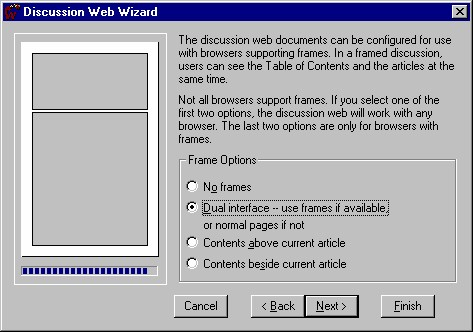
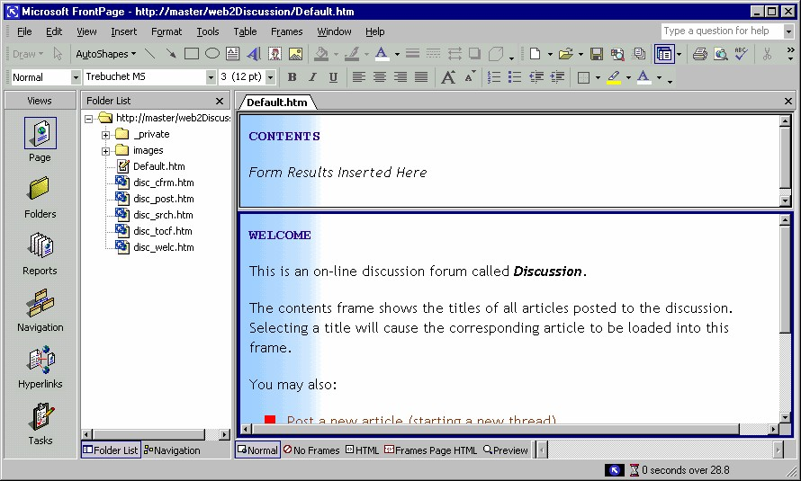

3 Discussion Web Wizard
Discussion Web Wizard adalah sarana untuk membuat sebuah kelompok diskusi
dimana pemakai dapat menuliskan pertanyaan dan komentar, lalu peserta lain bisa
membaca membaca komentarnya lalu membalas dengan komentarnya sendiri.
Anggota diskusi bisa lebih dari tiga orang. Discussion Web Wizard juga
menyediakan teks link yang menghubungkan antar host pengunjung sehingga bisa
membentuk jaringan diskusi tentang produk perusahaan kita. Wizard ini cocok untuk
komunikasi grup atau keompok profesional tertentu.
3.1 Langkah Pembuatan
Langkah pembuatan Discussion Web adalah sebagai berikut:
1. Aktifkan File _ New _ Page or Web …Task Pane aktif.
2. Klik icon Web site Templates. Muncul kotak dialog New from Templates.
3. Klik icon pertamaDiscussion Web Wizard. Lalu pada kotak isian Specify the
location of the new web, tuliskan URL web site Anda. Dalam contoh ini,
http://master/web2Discussion.
4. Klik OK. Wizard dimulai dengan munculnya kotak dialog pertama Discussion
Web Wizard.
Gambar 3.25 Kotak dialog wizard pertama
5. Bacalah keterangan yang memberikan petunjuk tentang wizard ini, lalu klik
tombol Next. Tampil kotak dialog kedua (Gambar 3.26).
Gambar 3.26 Kotak dialog kedua
6. Pada kotak dialog kedua pilihlah item yang akan ditampilkan. Antara lain Table
Of Content (daftar isi), Search Form (formulir pencarian teks), Threaded
Replies (kumpulan usulan), Confirmation Page (halaman konfrimasi). Klik
Next, tampil kotak dialog ketiga seperti Gambar 3.27.
Gambar 3.27 Kotak dialog ketiga
7. Pada kotak dialog ketiga tersedia kotak pengisian judul diskusi dan nama
folder penyimpan hasil diskusi. Klik Next, tampil dialog keempat. Gambar
3.28.
Gambar 3.28 Kotak dialog keempat
8. Kotak dialog keempat menyediakan sarana pemilihan komposisi kolom masukan
di antara item Subject (judul), Category (kelompok), Product (produk) dan
Comment (komentar). Tentukan pilihan Anda, lalu Next. Tampil dialog kelima.
Gambar 3.29 Kotak dialog kelima
9. Kotak dialog kelima menanyakan apakah diskusi yang akan dilangsungkan perlu
diproteksi atau tidak. Setelah menentukan pilihan, klik Next. Tampil dialog
keenam. Gambar 3.30.
Gambar 3.30 Kotak dialog keenam
10. Kotak dialog keenam menyediakan sarana penyortiran daftar isi yang akan
dilaksanakan. Apakah urutannya dari yang lama menuju yang baru ataukah
sebaliknya.
Gambar 3.31 Kotak dialog ketujuh
11. Selanjutnya kotak dialog ketujuh menanyakan apakah daftar isi akan digunakan
sebagai halaman utama (Home Page).
Gambar 3.32 Kotak dialog kedelapan
12. Kotak dialog kedelapan menanyakan komposisi topik pencarian yang akan
dipakai. Topik tersebut antara lain Subject, Size, Date dan Score.
• Subject, judul item yang dicari
• Size, ukuran item yang dicari
• Date, tanggal pembuatan item
• Score , nilai item
Gambar 3.33 Kotak dialog kesembilan
13. Kotak dialog kesembilan menyediakan sarana pemilihan tema web. Tema yang
kita perlukan telah disediakan oleh FrontPage XP pada Gallery Theme sehingga
kita tinggal memilihnya saja. Klik tombol Choose Web Theme , tampil kotak
dialog pemilihan tema seperti Gambar 3.34.
Gambar 3.34 Kotak dialog pemilihan tema
14. Pilihlah tema lalu OK, tampilan kembali ke kotak dialog kesembilan. Klik
tombol Next, tampil kotak dialog kesepuluh.

Gambar 3.35 Kotak dialog kesepuluh
15. Pada kotak dialog kesepuluh pilihlah komposisi frame yang Anda sukai pada
kotak dialog kesepuluh. Lalu klik Next, tampil kotak dialog terakhir seperti
Gambar 3.36.
Gambar 3.36 Kotak dialog kesebelas (terakhir)
16. Sebelum Anda mengakhiri wizard ini, bila Anda ingin mengubah item pilihan
tertentu, klik tombol Back beberapa kali sampai ditemukan kotak dialog yang
mengandung item tersebut. Lalu ubahlah item dan jalankan ulang wizard sampai
kotak dialog terkahir ini. Kemudian klik Finish, maka berakhirlah paket
pemakaian wizard ini, hasilnya bisa Anda lihat pada FrontPage Explorer. Kalau
Anda klik Navigation View, tampilan susunan situs akan seperti Gambar 3.37.

Gambar 3.37 Hasil Discussion Wizard
17. Selanjutnya Anda tin ggal mengganti teks yang ada sesuai dengan kebutuhan
Anda.
3.2 Ringkasan Discussion Wizard
Anda merasa bingung dengan proses wizard yang begitu panjang? Baiklah, Tabel 3.1
berikut ini ringkasan pembuatan Discussion Wizard.
Tabel 3.1 Kotak dialog wizard dan keterangannya

Tidak ada keharusan untuk menyelesaikan wizard sampai kotak dialog kesebelas,
pada kotak dialog manapun Anda bisa menghentikan proses jika Anda inginkan,
yaitu dengan klik tombol Finish. Atau, Anda ingin menggagalkan pemakaian wizard,
klik tombol Cancel.
Anda juga bisa melompati kotak dialog tertentu dengan tidak mengaktifkan pilihan
apapun pada kotak dialog tersebut.
Copyright © Herlan Lesmana
Created with the Freeware Edition of HelpNDoc: Free Web Help generator